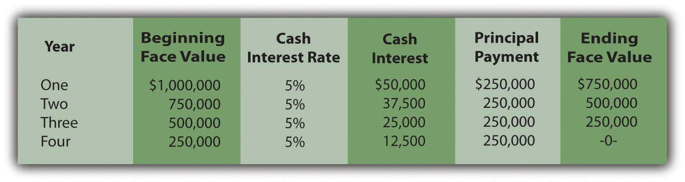
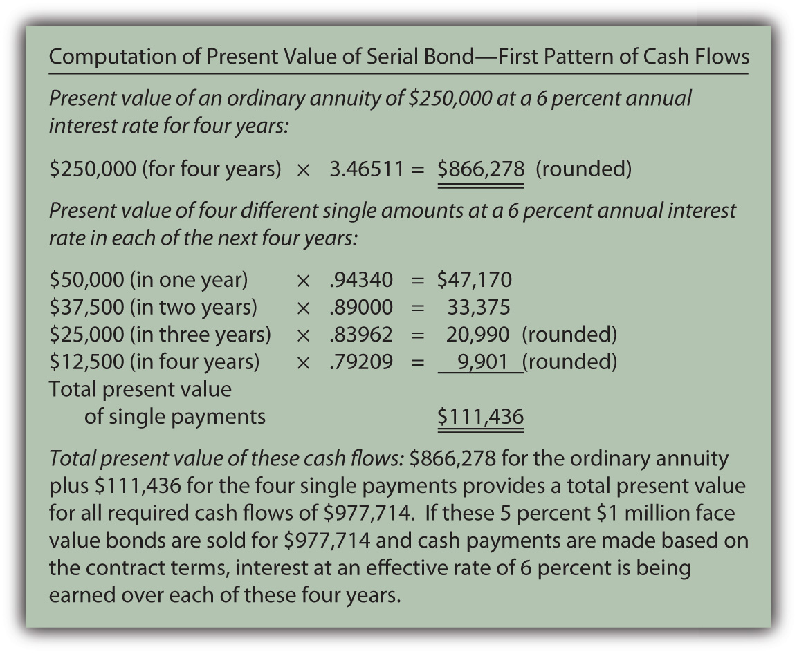
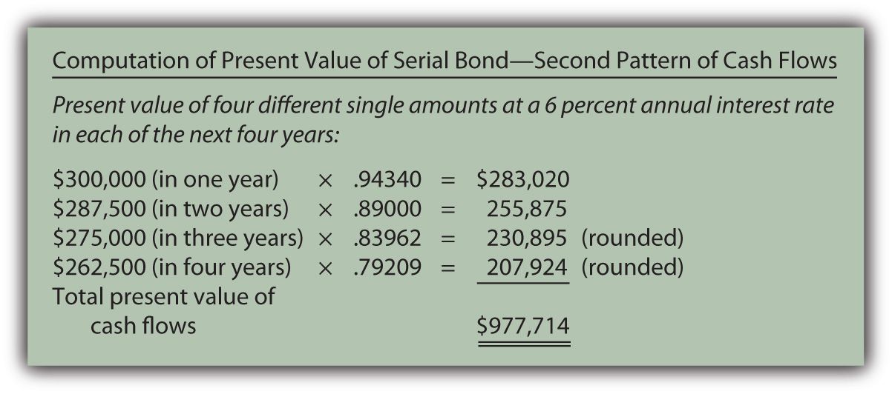
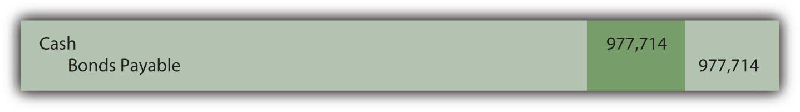
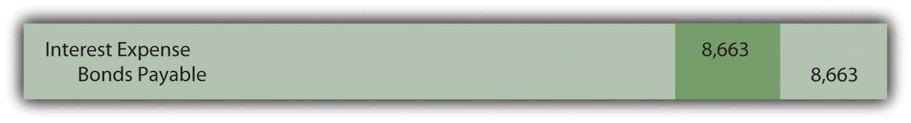
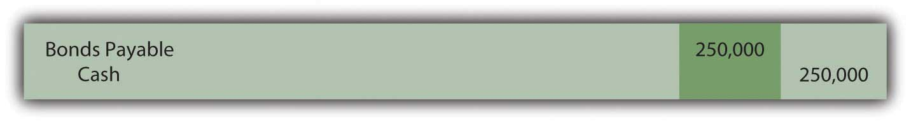
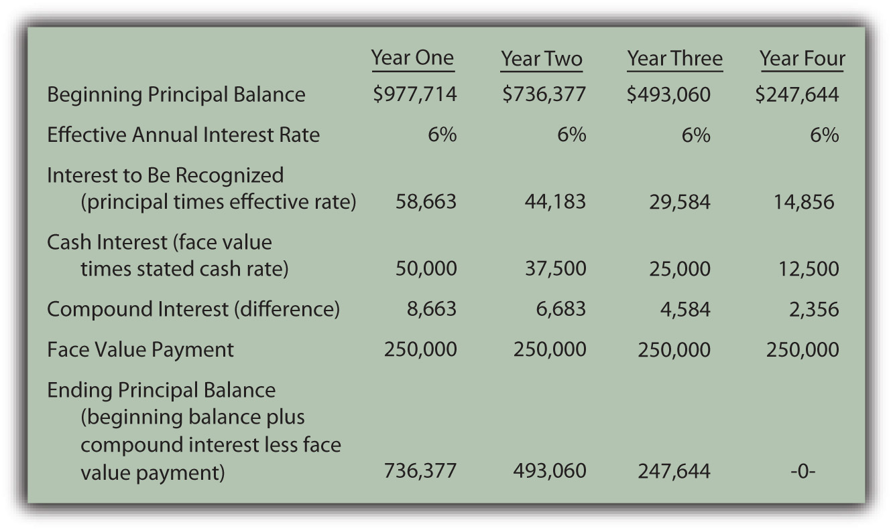

At the end of this section, students should be able to meet the following objectives:
Question: The previous section of this chapter looked at term bonds. Interest was paid each period although payment of the face value did not occur until the end of the four-year term. How does this process differ for a serial bond where both interest and a portion of the face value are paid periodically?
To illustrate, assume that Smith Corporation issues a four-year, $1 million serial bond on January 1, Year One, paying a 5 percent stated interest rate at the end of each year on the unpaid face value for the period. The bond contract specifies that $250,000 of the face value is also to be paid annually at the same time as the interest. Smith and the potential investors negotiate for some time and finally agree on a 6 percent annual effective rate. What accounting is appropriate for a serial bond?
Answer: In reporting a term bond, five steps were taken:
This same process is applied when a serial bond is issued. The sole difference is that additional payments are made periodically to reduce the face value of the debt.
For the Smith Corporation serial bond described above, the following steps are required.
Identify cash flows specified in the bond contract. As a serial bond, Smith is required to pay $250,000 to reduce the face value each year. In addition, the unpaid face value for Year One is $1 million so the 5 percent stated rate necessitates a $50,000 year-end interest payment. Following the first principal payment, the remaining face value is only $750,000 throughout the second year. Thus, the interest payment at the end of that period falls to $37,500 ($750,000 × 5 percent). Based on the contract, the cash flows required by this bond are as follows.
Figure 14.16 Cash Payments Required by Bond Contract
Determine present value of the cash flows. These required cash flows can be organized in either of two ways.
The same cash flows are being described so the present value of both patterns will be the same $977,714 whichever approach is followed.
http://www.principlesofaccounting.com/ART/fv.pv.tables/pvofordinaryannuity.htm
http://www.principlesofaccounting.com/ART/fv.pv.tables/pvof1.htm
Figure 14.17 Computation of Present Value of Serial Bond—First Pattern of Cash Flows
Figure 14.18 Computation of Present Value of Serial Bond—Second Pattern of Cash Flows
Record the principal amount received for the bond. Based on this computation, if $977,714 is paid for this four-year $1 million serial bond with an annual stated rate of 5 percent, the effective rate being earned by these cash flows will be 6 percent per year. Accepting a discount of this amount increases the effective rate of interest from 5 percent to exactly 6 percent. The issuance of the bond is recorded through the following journal entry.
Figure 14.19 January 1, Year One—Issuance of $1 Million Serial Bonds Paying 5 Percent Annual Interest with Effective Negotiated Rate of 6 Percent
Payment of stated cash interest at 5 percent annual rate. Because of the terms specified in the contract, interest of $50,000 will be paid at the end of Year One, $37,500 at the end of Year Two, and so on as the face value is also paid. The Year One payment is recorded as follows.
Figure 14.20 December 31, Year One—Payment of 5 Percent Interest on Serial Bond

This same entry is made each year except that the payments will fall to $37,500, $25,000, and finally $12,500.
Effective rate method is applied to recognize negotiated interest rate. For the first year, the principal balance is the original issuance price of $977,714. The yield rate decided by the two parties was 6 percent so the interest to be recognized is $58,663 (rounded). As shown in the above entry, the cash interest paid is only 5 percent of the face value or $50,000. The extra interest for the period ($8,663) is compounded—added to the principal of the bond payable.
Figure 14.21 December 31, Year One—Adjustment of Interest from Cash Rate to Effective Rate
In addition, as a serial bond, the first payment of the face value is made at the end of Year One.
Figure 14.22 December 31, Year One—Payment on Face Value of Serial Bond
Whether it is a term bond or a serial bond, the process is the same. All the amounts to be recorded over the four-year life of this bond can be computed to verify that the final payment does remove the debt precisely.
Figure 14.23 Balances to be Reported Over the Four-year Life of Serial BondThe interest recognized in the final year has been adjusted by $3 to compensate for the rounding of several computations so that the liability balance drops to exactly zero after four years.
Link to multiple-choice question for practice purposes: http://www.quia.com/quiz/2093006.html
Link to multiple-choice question for practice purposes: http://www.quia.com/quiz/2092982.html
The issuance price for bonds can be computed and the subsequent accounting can be outlined in five general steps: determining the cash payments required by the contract, calculating the present value of those cash flows at the negotiated effective rate, recording the bond at this present value amount, recording each periodic cash interest payment, and adjusting the stated cash interest payments to the effective interest rate. A serial bond follows this process although some part of the face value is also paid each period. The principal goes up each period as a result of interest compounding. However, for a serial bond, it also goes down because of the periodic face value payments.